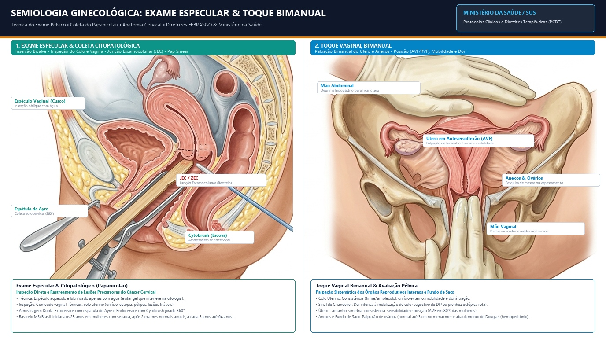
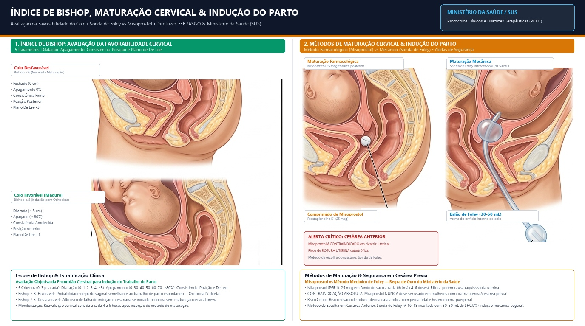
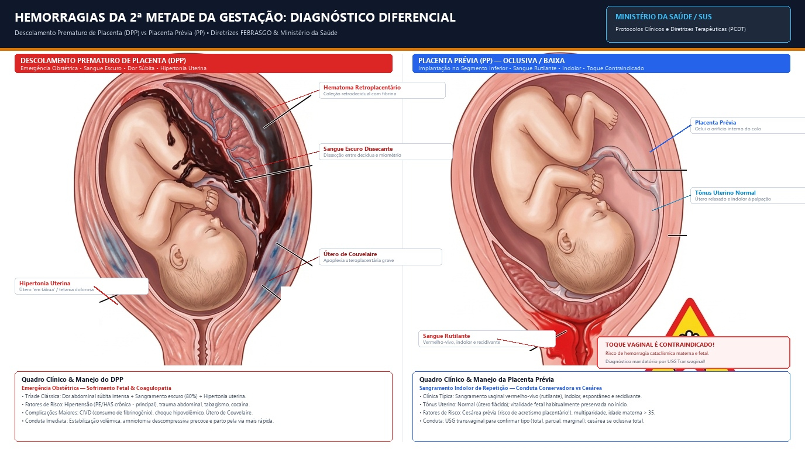
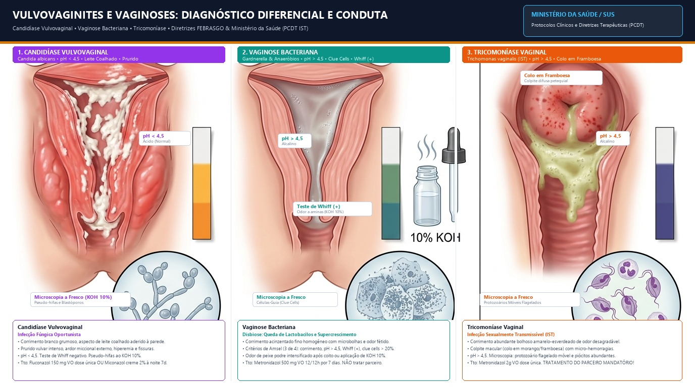
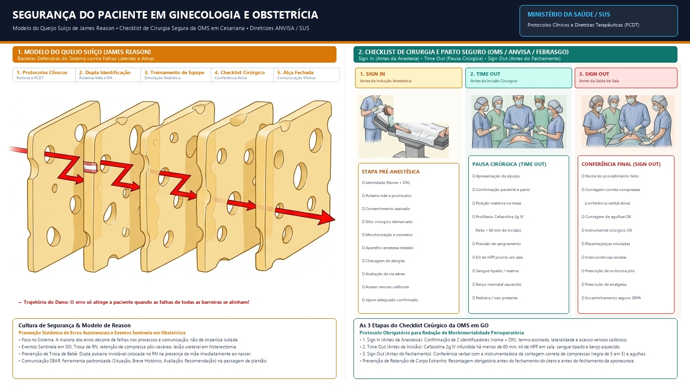

Semiologia Ginecológica e Obstétrica
Anamnese estruturada, exame físico das mamas e pelve, exame especular, toque bimanual, Índice de Bishop e classificação de Bethesda.
Estrutura da Anamnese Ginecológica (ID-QP-HMA-AR)
Menarca, DUM (Data da Última Menstruação), frequência (24-38 dias), duração (4-8 dias), fluxo e dismenorreia.
Sexarca, número de parceiros, práticas, dispareunia (superficial vs profunda), ISTs prévias e orgasmo.
Gestações, partos normais, abortos e cesarianas. Complicações prévias (DHEG, DMG, hemorragias).
Câncer de mama e ovário (mutação BRCA), endometriose, tabagismo (cofator de persistência de HPV).
Mnemônico de Queixas
BLOOD CLAMPGuia de conferência mental rápida na consulta ginecológica:
- Bleeding — Sangramento anormal (SUA)
- Leucorreia — Corrimento vaginal
- Odor / Dor — Dor pélvica aguda ou crônica
- Oncologia — Nódulos ou rastreamentos
- Dispareunia — Dor no ato sexual
- Contraception — Demanda contraceptiva
- Lump — Nódulo palpável na mama
- Amenorreia — Falha menstrual
- Menopausa — Climatério e fogachos
- Prurido — Prurido vulvar intenso
Semiologia Ginecológica: Exame Especular e Toque Vaginal Bimanual

Diagrama anatômico sagital detalhando a introdução oblíqua do espéculo bivalve de Cusco, amostragem da Junção Escamocolunar (JEC/ZEC) com espátula de Ayre e Cytobrush, e palpação bimanual pélvica de útero em AVF e anexos.
Índice de Bishop, Maturação Cervical e Indução do Parto

Comparação visual anatômica de colo desfavorável (Bishop < 6) vs colo maduro (Bishop ≥ 8). Métodos de indução: Misoprostol (PGE1) vs Sonda Mecânica de Foley. Alerta crítico de segurança para cicatriz uterina/cesárea prévia.
Calculadora do Índice de Bishop & Algoritmo de Indução
Classificação de Bethesda & Conduta Citopatológica (Papanicolau)
| Resultado Bethesda | Significado Citológico | Conduta Recomendada (MS / FEBRASGO) |
|---|---|---|
| NILM | Negativo para lesão intraepitelial ou malignidade | Rastreio rotineiro trienal (após 2 anuais normais). |
| ASC-US | Células escamosas atípicas de significado indeterminado | Repetir citologia em 6 meses (se ≥ 30 anos) ou 12 meses (25-29 anos). Se 2 exames positivos → Colposcopia. |
| ASC-H | Atipias escamosas que não permitem excluir HSIL | Colposcopia direta e imediata. |
| LSIL | Lesão intraepitelial de baixo grau (NIC 1 / efeito citopático HPV) | Repetir citologia em 6 meses (se ≥ 25 anos). Se persistir → Colposcopia. |
| HSIL | Lesão intraepitelial de alto grau (NIC 2 ou NIC 3) | Colposcopia + biópsia dirigida imediata (risco de microinvasão). |
| AGC | Células glandulares atípicas (endocervicais ou endometriais) | Colposcopia + avaliação endocervical + USG TV / biópsia endometrial se > 35 anos ou SUA. |
Raciocínio Clínico em Ginecologia e Obstetrícia
Diagnósticos diferenciais de emergência: Hemorragias da 2ª metade (DPP vs Placenta Prévia), Vulvovaginites e Abordagem sindrômica da dor pélvica aguda.
Hemorragias da 2ª Metade da Gestação: DPP vs Placenta Prévia

Comparação clínica e anatômica entre Descolamento Prematuro de Placenta (hematoma retroplacentário, sangue escuro, hipertonia e útero de Couvelaire) e Placenta Prévia (sangramento indolor rutilante e contraindicação absoluta ao toque digital).
Quadro Comparativo de Ouro: DPP vs Placenta Prévia (USMLE & Residência)
| Parâmetro Clínico | Descolamento Prematuro de Placenta (DPP) | Placenta Prévia (PP) |
|---|---|---|
| Dor Abdominal | SIM (Dor súbita, intensa e lancinante) | NÃO (Completamente indolor) |
| Cor do Sangramento | Escuro, com coágulos (pode ser 20% oculto) | Vermelho-vivo (rutilante), sem coágulos |
| Tônus Uterino | Hipertonia (útero rígido "em tábua") | Tônus normal (útero flácido e relaxado) |
| Vitalidade Fetal | Sofrimento fetal precoce / bradicardia severa | Vitalidade habitualmente preservada no início |
| Toque Vaginal | Permitido (avaliar dilatação para via de parto) | CONTRAINDICADO! (Toque apenas após USG) |
| Fatores de Risco | Hipertensão crônica / Pré-eclâmpsia, cocaína, trauma | Cesárea prévia (acretismo!), multiparidade, idade > 35 |
| Complicações Maiores | CIVD grave, choque hipovolêmico, Útero de Couvelaire | Acretismo placentário (acreta, increta, percreta), choque |
Vulvovaginites e Vaginoses: Diagnóstico Diferencial e Conduta

Tríade comparativa das queixas mais frequentes de corrimento: 1. Candidíase (pH < 4,5, placas brancas em leite coalhado, pseudo-hifas); 2. Vaginose Bacteriana (pH > 4,5, Whiff teste com KOH 10%, clue cells); 3. Tricomoníase (IST, pH > 4,5, colpite em framboesa/morango, flagelados móveis).
Checklist Mental de Raciocínio Rápido em GO
Medicina Baseada em Evidências (MBE) em GO
Pirâmide de evidências, bioestatística clínica (Sensibilidade, Especificidade, VPP, VPN, NNT, LR) e principais vieses em saúde da mulher.
Hierarquia das Evidências Científicas
Regras de Decisão Clínica: SnNOut vs SpPIn
Alta Sensibilidade
Teste de alta sensibilidade tem pouquíssimos falsos negativos. Logo, quando o resultado é NEGATIVO, ele DESCARTA com segurança a patologia (Sensitivity rules OUT).
Aplicação: Rastreamento populacional (ex: D-dímero para TEP em gestantes, teste rápido de HIV, β-hCG sérico).
Alta Especificidade
Teste de alta especificidade tem pouquíssimos falsos positivos. Logo, quando o resultado é POSITIVO, ele CONFIRMA com certeza o diagnóstico (Specificity rules IN).
Aplicação: Exames de confirmação diagnóstica definitiva (ex: Western Blot para HIV, Biópsia guiada por colposcopia).
Calculadora de Acurácia Diagnóstica (Tabela 2x2)
Segurança do Paciente & Checklist de Cirurgia Segura (OMS)
Modelo do Queijo Suíço de James Reason, prevenção sistêmica de erros assistenciais e as 3 fases do checklist cirúrgico em cesariana e cirurgia pélvica.
Segurança do Paciente: Modelo de Reason & Checklist Cirúrgico da OMS

O Modelo do Queijo Suíço demonstra as barreiras de defesa contra falhas latentes. À direita, as 3 fases do Checklist de Cirurgia e Parto Seguro (Sign In, Time Out e Sign Out) com ilustrações da equipe cirúrgica em ação e verificações de segurança.
Checklist Interativo de Cirurgia & Parto Seguro (OMS / ANVISA)
Comunicação Clínica: Protocolos SPIKES & SBAR
Técnicas de comunicação empática de más notícias (SPIKES) e ferramenta padronizada de transferência de casos críticos na equipe (SBAR).
As 6 Etapas do Protocolo SPIKES (Comunicação de Más Notícias)
Garantir privacidade, sentar-se ao mesmo nível dos olhos da paciente, desligar celulares e perguntar se ela deseja a presença de acompanhante.
Avaliar o que a paciente já sabe ou suspeita: "O que os médicos já conversaram com você até agora sobre os exames?"
Verificar quanto detalhe ela deseja saber: "Podemos conversar agora sobre o resultado da biópsia ou prefere aguardar alguém?"
Usar 'tiro de alerta' prévio: "Infelizmente trago uma notícia difícil..." Evitar jargões técnicos herméticos e falar em frases curtas.
Respeitar o silêncio terapêutico e acolher emoções: "Consigo ver como isso é doloroso e difícil. Nós estamos juntos com você." Nunca dizer 'não há mais nada a fazer'.
Delinear plano claro dos próximos passos terapêuticos e agendar retorno próximo para não deixar a paciente desamparada.
Gerador de Passagem de Plantão Obstétrico (Protocolo SBAR)
Bioética em Ginecologia e Obstetrícia
Os 4 princípios de Beauchamp & Childress, consentimento informado, sigilo profissional, aborto legal no Brasil e prevenção da violência obstétrica.
Os 4 Princípios de Beauchamp & Childress
O consentimento é privativo da mulher capaz. Respeitar o plano de parto e a recusa de intervenções após esclarecimento adequado dos riscos.
Evitar procedimentos iatrogênicos ou obsoletos (proibição da Manobra de Kristeller, episiotomia de rotina ou cesariana eletiva sem indicação médica).
Agir no melhor interesse do binômio mãe-feto, ofertando suporte analgésico adequado e suporte fetal de padrão ouro.
Distribuição equitativa dos recursos, garantia de vaga em UTI obstétrica e acolhimento universal sem preconceitos no SUS.
Aborto Legal na Legislação Brasileira
PCDT MSATENÇÃO MÁXIMA PARA PROVAS E PRÁTICA: O médico NÃO PODE EXIGIR Boletim de Ocorrência (BO), autorização judicial ou laudo do IML. A palavra da mulher é legalmente suficiente. A recusa injustificada constitui omissão de socorro.
Aborto necessário / terapêutico quando não há outro meio de salvar a vida da gestante (ex: cardiopatia descompensada grave, câncer com quimioterapia incompatível). Exige anuência médica.
Inviabilidade da vida extrauterina. Laudo emitido por 2 médicos com registro ultrassonográfico com mais de 12 semanas de gestação.
Direitos Sexuais, Reprodutivos & Atendimento à Violência Sexual
Planejamento reprodutivo, contracepção reversível de longa ação (LARCs) e protocolo de atendimento emergencial a vítimas de violência sexual.
Protocolo Interativo de Atendimento à Vítima de Violência Sexual (PCDT / SUS)
Recomendações Globais do Ministério da Saúde:
Cuidados Paliativos em Ginecologia Oncológica
Escada analgésica da OMS, manejo de sintomas em tumores pélvicos avançados (obstrução intestinal maligna, sangramento tumoral) e diretivas antecipadas de vontade.
Calculadora da Escada Analgésica da OMS na Dor Oncológica
Frequente em carcinoma de ovário. Tríade clínica: Octreotida (reduz secreção) + Dexametasona (desinflamação) + Haloperidol (antiemético central).
Neoplasia de colo avançada. Manejo: Ácido Tranexâmico 1g IV de 8/8h, tamponamento vaginal compressivo com gaze e solicitação de radioterapia hemostática.
Registro formal da vontade da paciente e nomeação de procurador de saúde. Não intubação e não reanimação em terminalidade não é eutanásia, é ortotanásia ética.
Top 20 Pontos de Ouro para Residência Médica & USMLE Step 2
Conceitos de maior probabilidade de cobrança em exames de admissão e provas práticas de habilidades clínicas.
1° exame obrigatório em mulher fértil é sempre o β-hCG (excluir prenhez ectópica).
DPP = dor + sangue escuro + hipertonia. Placenta Prévia = indolor + sangue rutilante vivo.
Contraindicado em qualquer sangramento vaginal até afastar placenta prévia ao USG.
Candidíase tem pH < 4,5 e pseudo-hifas. Vaginose tem pH > 4,5, clue cells e Whiff (+).
Início aos 25 anos. Após 2 anuais normais, intervalo trienal até os 64 anos.
Exigem colposcopia imediata; HSIL requer biópsia para afastar NIC 3 e invasão.
Sensibilidade alta afasta no negativo. Especificidade alta confirma no positivo.
Tiro de alerta prévio e acolhimento empático com silêncio terapêutico.
A decisão pertence à mulher; ninguém pode assinar por ela se plenamente lúcida.
Permitida apenas em notificação compulsória, risco iminente ou ordem judicial.
Não exige BO policial nem autorização de juiz. A palavra da mulher basta.
Janela máxima de 72h para PEP HIV. Antibióticos imediatos para gonococo e clamídia.
Bishop ≥ 8 induz com ocitocina. Bishop < 6 exige maturação prévia.
Proibição formal absoluta. Usar apenas sonda mecânica de Foley.
Devem ser integrados precocemente ao diagnóstico oncológico avançado.
Não há dose máxima de morfina no câncer. Titular e associar sempre laxativos.
Octreotida para secar secreções gástricas + Dexametasona contra edema tumoral.
Alívio de sintoma refratário com midazolam; não visa abreviação da vida.
Três pausas ativas verbais: Sign In, Time Out e Sign Out.
Dupla pulseira inviolável afixada no bebê imediatamente ao nascer diante da mãe.
Banco de Flashcards Clínicos Interativos
Treine recordação ativa com rotação 3D dos principais conceitos cobrados em provas e na prática do internato.
Carregando pergunta...
Carregando resposta...
Simulado de Casos Clínicos Comentados
Questões no estilo das principais bancas de Residência Médica do Brasil (ENARE, USP, UNIFESP, SUS-SP) e USMLE Step 2 CK.